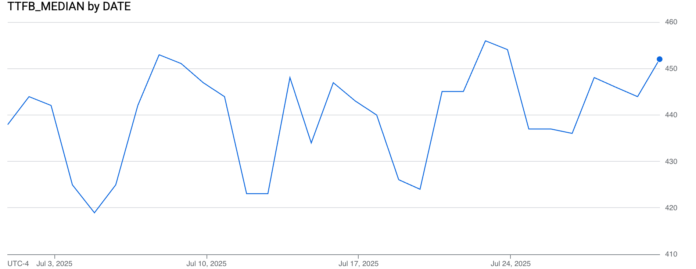
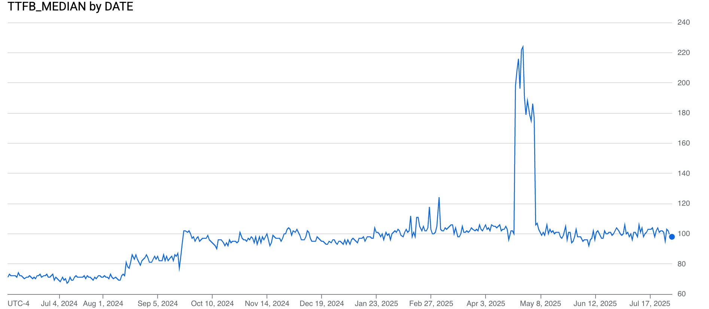
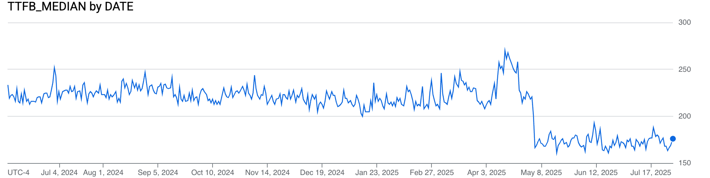
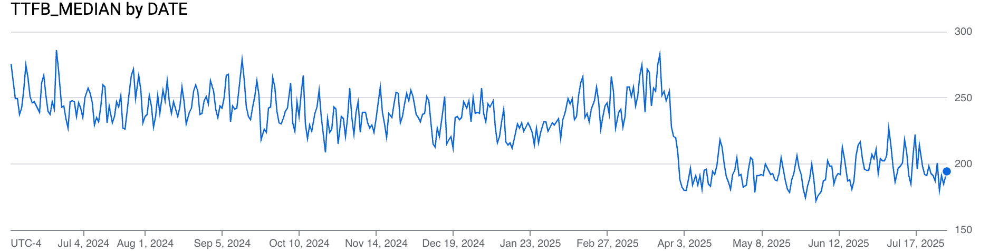

Akamai Employee Individual Websites Datasets
By Nic Jansma on
Today we are announcing a new dataset that has been added to the RUM Archive: Akamai Employee Individual Websites
A few Akamai employees have opted-in to including their personal websites in the RUM Archive:
- sarna.net - a hobby website (for the BattleTech game) via Nic Jansma
- scalemates.com - a hobby website (for scale models) via Tim Vereecke
- virtualglobetrotting.com - a travel website via Nic Jansma
How does the RUM data from these websites differ from the regular Akamai mPulse RUM dataset?
-
Each website is individually identifiable, meaning they have a
SITEcolumn set- You can track any of those three websites individually over time
- In comparison, the Akamai mPulse RUM dataset is a mixture of the Top 100 mPulse customers, and those websites are not identified or named (and may change over time)
-
These websites are not setting a Minimum Count Threshold
- As a result, none of the data is being sampled, nor are any outliers being excluded
- In comparison, the Akamai mPulse RUM dataset has the threshold set to a minimum of 5 beacons per unique tuple of dimensions, so outliers may be excluded from the dataset
-
These three websites have their data published to the
rumarchive_page_loads_individualtable- The mPulse Top 100 data is in the
rumarchive_page_loadstable - Existing queries will not scan this data
- The mPulse Top 100 data is in the
As a result, if you want to query RUM data for any of these websites, you will need to change the table name in your SQL (the rest of the schema is identical).
Since these websites are identified (via the SITE) column, your queries may want to specify one of those sites specifically.
Why would you want to query these datasets? Let's look at some examples.
Examples
mPulse Top 100 vs. Individual Websites
One of the benefits of the mPulse Top 100 dataset is that it contains hundreds of millions of page loads each day across 100 websites.
A downside of this data, since it contains an amalgamation of many websites (which can change daily), is that the data does not represent any specific website.
The three Akamai Employee websites provide an alternative view to the mPulse data, as they are specific websites that each have their own unique traffic patterns.
Let's see how the mPulse Top 100 dataset compares to these individual websites.
For example, let's review Mobile vs. Desktop usage in the mPulse dataset for July 2025:
-- Mobile vs. Desktop for mPulse Top 100 dataset in July 2025
SELECT SITE,
SUM(BEACONS) AS BEACONS,
DEVICETYPE
FROM `akamai-mpulse-rumarchive.rumarchive.rumarchive_page_loads`
WHERE DATE >= '2025-07-01'
AND DATE <= '2025-07-31'
AND DEVICETYPE IS NOT NULL
GROUP BY SITE, DEVICETYPE
ORDER BY SITE ASC, BEACONS DESC, DEVICETYPE| SITE | BEACONS | DEVICETYPE |
|---|---|---|
| (multiple) | 1562278602 | Desktop |
| (multiple) | 2714540186 | Mobile |
| (multiple) | 193847403 | Tablet |
NOTE: This SQL calculates the DeviceType distribution seen across all samples over 31 days of mPulse RUM data (where each day is its own sample set). A more accurate way to look at this data might be to calculate the DeviceType distribution for each day, then average those distributions. That query is more complex, and in this case, rounded to the same percentages.
Now let's compare those results to each individual website (note the table has changed):
-- Mobile vs. Desktop for Akamai employee websites in July 2025
SELECT SITE,
SUM(BEACONS) AS BEACONS,
DEVICETYPE
FROM `akamai-mpulse-rumarchive.rumarchive.rumarchive_page_loads_individual`
WHERE DATE >= '2025-07-01'
AND DATE <= '2025-07-31'
AND DEVICETYPE IS NOT NULL
GROUP BY SITE, DEVICETYPE
ORDER BY SITE ASC, BEACONS DESC, DEVICETYPE| SITE | BEACONS | DEVICETYPE |
|---|---|---|
| sarna.net | 1340556 | Mobile |
| sarna.net | 1262629 | Desktop |
| sarna.net | 129388 | Tablet |
| scalemates.com | 3345773 | Desktop |
| scalemates.com | 2524355 | Mobile |
| scalemates.com | 575796 | Tablet |
| virtualglobetrotting.com | 486161 | Mobile |
| virtualglobetrotting.com | 282918 | Desktop |
| virtualglobetrotting.com | 50791 | Tablet |
Pivoted by DEVICETYPE, we can see the differences in device distributions between the mPulse Top 100 dataset and each individual website:
| DEVICETYPE | mPulse Top 100 | sarna.net | scalemates.com | virtualglobetrotting.com |
|---|---|---|---|---|
| Mobile | 61% | 49% | 39% | 59% |
| Desktop | 35% | 46% | 52% | 34% |
| Tablet | 4% | 5% | 9% | 6% |
In this case, none of the three individual websites have the same Mobile/Desktop traffic percentage as the mPulse Top 100 average -- two of those three have a lot more Desktop visitors!
Unsampled data over time
Since the mPulse Top 100 dataset is sampled, and the makeup of the Top 100 websites can change daily, outliers may be less represented in that data.
One of the benefits of the new Akamai Employee (individually identified) websites is that they are exporting 100% of their data to the RUM Archive each day. No sampling is being done.
This means that you can track the winds of change in a specific website over time, as you know its data has not been sampled. Changes would be due to the sites themselves changing, or other external changes like new browser versions or increases/decreases in traffic patterns.
If, for example, you wanted to look at the Time to First Byte (TTFB) across all of the mPulse Top 100 websites in July 2025, you may try to do a query like this:
-- TTFB across mPulse in 2025-07 (simple query)
SELECT `akamai-mpulse-rumarchive.rumarchive.PERCENTILE_APPROX`(
ARRAY_AGG(TTFBHISTOGRAM),
[0.50],
10,
false) as TTFB
FROM `akamai-mpulse-rumarchive.rumarchive.rumarchive_page_loads`
WHERE DATE >= '2025-07-01'
AND DATE <= '2025-07-31'
GROUP BY DATE
ORDER BY DATE ASCUnfortunately, you'd run into an error, because the Top 100 dataset is pretty large:
Resources exceeded during query execution: UDF out of memory.This BigQuery error stems from the volume of data in the mPulse dataset. We've documented why this happens and provide a workaround (issuing subqueries with high-cardinality to reduce the complexity of aggregation).
Here's how you might rewrite the above query to use the COUNTRY dimension to split the query into smaller segments, before re-combining:
-- TTFB across mPulse in 2025-07 (using subqueries)
SELECT DATE,
SUM(BEACONS) AS BEACONS,
CAST((`akamai-mpulse-rumarchive.rumarchive.PERCENTILE_APPROX`(
ARRAY_AGG(TTFBHISTOGRAM),
[0.50],
10,
false)) AS INTEGER) AS TTFB_MEDIAN
FROM (
SELECT COUNTRY,
DATE,
SUM(BEACONS) AS BEACONS,
`akamai-mpulse-rumarchive.rumarchive.COMBINE_HISTOGRAMS`(ARRAY_AGG(TTFBHISTOGRAM)) AS TTFBHISTOGRAM
FROM `akamai-mpulse-rumarchive.rumarchive.rumarchive_page_loads`
WHERE DATE >= '2025-07-01'
AND DATE <= '2025-07-31'
GROUP BY COUNTRY, DATE
) AS subquery
GROUP BY DATE
ORDER BY DATE ASC
;The above query completes successfully, though it uses 7.24 GB of BigQuery data (and only covers one month of data):
 mPulse Top 100 TTFB median
It looks like for July 2025, the median TTFB across the mPulse Top 100 bounced around 420 to 450ms, depending on the day and sites.
However, when we focus on just a single Akamai Employee Individual website, we can look at just that site's data across a longer period.
Let's review Tim's scalemates.com TTFB from June 2024 through July 2025 (13 months):
-- TTFB scalemates from 2024-06 through 2025-07
SELECT DATE,
CAST((`akamai-mpulse-rumarchive.rumarchive.PERCENTILE_APPROX`(
ARRAY_AGG(TTFBHISTOGRAM),
[0.50],
10,
false)) AS INTEGER) as TTFB_MEDIAN
FROM `akamai-mpulse-rumarchive.rumarchive.rumarchive_page_loads_individual`
WHERE DATE >= '2024-06-01'
AND DATE <= '2025-07-31'
AND SITE = 'scalemates.com'
GROUP BY DATE
ORDER BY DATE ASC
;This query job processed only 762.27 MB of data (10% of the mPulse Top 100 dataset) and is able to span 13 months (instead of just 1 above).
The results are a bit more interesting as well, as we're focused on just a single website:
 scalemates TTFB median
I'd be curious to hear if Tim knows what happed with scalemates.com for the small increases on 2024-08-14, 2024-09-20 and the large (temporary) increase from 2025-04-22 through 2025-05-04!
Ok, but honestly, Tim runs a pretty awesome (and amazingly fast!) website. 100ms TTFB is great.
Let's see how Nic's websites compare:
 sarna TTFB median
 virtualglobetrotting TTFB median
> Nic: Nic, why are your websites so slow compared to Tim?
> Nic: Well, I'm not as awesome as Tim.
> Nic: Ok, well what happened around March 27 (for virtualglobetrotting.com) and May 2nd (for sarna.net)?
> Nic: I migrated to a faster origin server! Still nowhere near as fast as Tim, but 5 year newer hardware helps!
With some of the example above, you can see the power of being able to narrow in on a single website over time.
Thanks to Tim and Nic for being open to sharing their data!
Interested in Participating in the RUM Archive?
We'd love to see more individual websites publish their RUM data to the RUM Archive. We're hoping that including our personal websites may motivate other website owners. From small blogs to large e-commerce websites, openly sharing RUM data could lead to some interesting findings!
We realize this isn't possible for many website owners, due to competitive (or legal) reasons, but please consider whether your RUM data might be a fit for the RUM Archive! You could choose to scrub, anonymize, sample and aggregate in whatever way makes sense for your site.
While we are highlighting a few Akamai employees' personal websites in this post, the RUM Archive is merely a suggested format for sharing RUM data that any other website could adhere to.
Would you be willing to share your blog's RUM data? Connect with us and we'll help as much as we can!